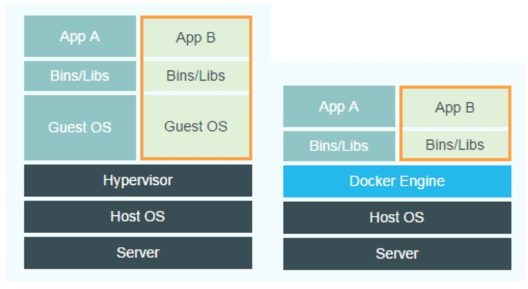
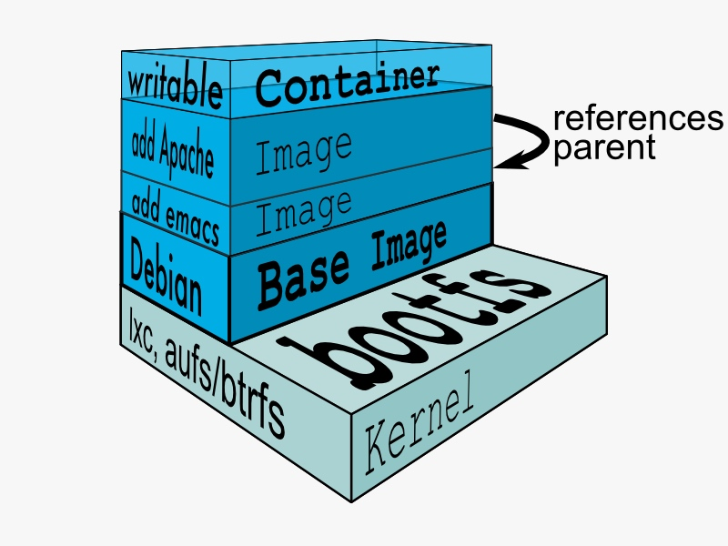
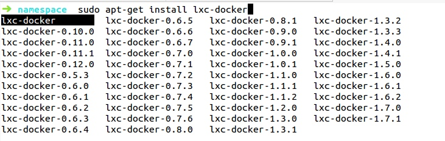
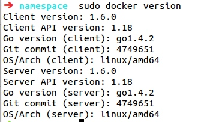

docker随谈
最近在搞Docker，其实去年就听老师说过这个东西，说非常火，当时不以为然，还错把它当成docky。当时想想docky不就是一个快速启动工具么，有什么。现在想想真是惭愧。。。
Docker的牛逼之处网上找找也有一大堆：轻量化、占用系统资源少（基本不占用）、部署快、扩展性强，可以说是虚拟化的未来。
Docker直接作用在宿主机上，不需要虚拟机管理系统。下图摘自网上：

可以看出使用Docker比一般的虚拟机少了两层东西，可见Docker的轻量。
Docker诞生之初也是为了能让开发者更专心的做开发，系统管理员更专注于系统的构架。所以Docker可以一次打包，在任何地方运行。它的官网也是这么说的：Build, Ship and Run Any App, Anywhere！试想一下当迁移服务器的时候你可能需要先将数据和应用迁出再部署到其他的服务器上，非常麻烦不说还有可能在这个过程中丢失数据。使用docker就没有这么多问题，你只需要将Docker image先上传到Docker Hub中然后在新的服务器中pull下来即可，是不是感觉这个过程和Git类似？Docker就是运用了集装箱的原理，它不在乎你是什么系统什么架构，它只负责把你关心的打包，然后交付给别人使用。
Docker有三个核心概念：容器、镜像、仓库。这三个如果铺开来讲恐怕这能成一个系列了，既然是随笔就力求用最短的话把它说清楚讲明白
镜像：镜像这个东西计算机专业的应该都能懂，它和我们装系统的镜像是一个东西。开发者把写好的程序打包放入镜像中就可以交付给别人使用（在这里可以不用纠结于这个镜像的具体内容），一般都是先从Docker Hub中下载一个现成的镜像然后开始开发自己要开发的东西。
容器：容器的概念比较绕，一开始我以为镜像是运行在容器中的，因为字面意思来看容器是容纳东西的嘛，但是事实是容器运行在镜像之上。我们知道镜像是不会改动的，当我们运行一个镜像那么他就生成了一个容器。可以把镜像想象成是一个程序，容器就是一个进程。镜像（程序）是静态的，容器（进程）是动态的。我们的开发部署工作都是在容器中
仓库：仓库就是存放镜像的地方。你可以建自己的私有仓库也可以建共有仓库。push可以把本地的镜像上传到Hub中，pull可以把Hub中的镜像下载到本地。把它想象成Github可以容易理解的多（暂时不要想版本控制，就单纯的上传和下载）。
这里必须要提Docker很牛的一个地方，就是容器的灵活性。镜像本身是由很多层文件系统组成的，当我们运行一个镜像产生了一个容器就会在镜像上添加一层读写层（位于下图的Container和Image之间的一层）！我们在容器中的所有操作都是作用在读写层上不会写入到镜像中。如果多次运行同一个镜像就会产生多个不同的容器（在镜像上平行的添加的读写层）。在这里可能会有疑问开这么多容器不就搞混了吗？容器是可以自己取名的，所以这完全不是问题。当你在容器内开发完程序就可以把容器打包为一个新的镜像，把没用的容器全部删掉。把你开发的具有稳定版程序的容器保留，下次开发使用start就能瞬间启动容器。

同时还有一个很重要的地方就是：Docker不是容器，而是管理容器的引擎。很多地方都会把Docker和容器划上等号，这是十分误导人的。
关于Docker安全性问题的思考
Docker目前在安全性和稳定性上面还有待时间的检验。不过Docker在未正式发布时就有好几家金融机构开始使用了，要知道金融公司对于平台的稳定性和安全性要求是十分之高的，由此可见Docker的魅力。然而Docker在实际生产中还是有一些安全性问题的。
①由于Docker的仓库是开放的，任何人都可以下载使用，难保不会有人在镜像中植入后门。
②尽管Docker有Namespace这层保障，但是由于Docker依赖于宿主机内核调度的先天特性，一旦内核出现Bug可以通过宿主机入侵容器，窃取生产环境信息。
③严格来说Docker不是虚拟机，普通虚拟机的root和宿主机的root是分开的，而Docker容器的root和宿主机的root是同一个用户，一旦容器内的用户提权至root，他就有了无限制的操作，要知道Docker容器是可以和宿主机共享文件系统的，容器内的用户提权了宿主机等于被提权了。Docker的本质是进程隔离，为进程创建隔离开的运行空间，这样就可以隔离有问题的应用。进程间的隔离是通过Namespace（作用：隔离）和Cgroup（作用：配额限制），隔离出来的进程组对外表现就是一个Container。
新手使用Docker会遇到的坑
此坑仅适用于中国程序员。感谢GFW，下载Docker并不是那么的简单，Ubuntu和Centos源中有Docker安装包，但是想要下载最新版或特定版本的并不是那么容易，因为Docker的网站在中国访问极慢，个人不是很推荐网上找不明来源的安装包下载安装，毕竟官方的才是最好的。这些问题都不是很大，最大的问题是下载和上传Docker镜像，https://hub.docker.com 这个网站就跟段誉的武功一样时灵时不灵的（大多数时候不灵，能访问也是小水管），下面我分别给出下载Docker和镜像的解决方法：
①下载Docker：
方法一：
添加一个源，这个源貌似是老毛子的，里面Docker的版本还是比较全的，从它的源中下载你想要的Docker版本（偶尔也会抽疯，没办法）
sudo apt-key adv --keyserver keyserver.ubuntu.com --recv-keys 36A1D7869245C8950F966E92D8576A8BA88D21E9 sudo sh -c "echo deb http://mirror.yandex.ru/mirrors/docker/ docker main > /etc/apt/sources.list.d/docker.list" sudo apt-get update sudo apt-get install lxc-docker-×××

方法二：
这是Docker官方给出的方法，没试过，可以试试
sudo apt-get update sudo apt-get install wget wget -qO- https://get.docker.com/ | sh wget -qO- https://get.docker.com/gpg | sudo apt-key add -
Docker安装完毕可以先看看是否安装成功

②下载镜像
下载完Docker就可以下载镜像来一发试试了，在这里你可以使用官方镜像下载：
sudo docker pull hello-world 下载镜像 sudo docker run hello-world 运行镜像
run是运行一个镜像，由于刚开始使用本地没有任何镜像，Docker检测到没有会自动去Docker Hub中下载。这个命令大多数时候是抽疯的（感谢GFW）。
所以我推荐一个更好的方法：使用第三方镜像库。网上找了半天好像也就有一个Daocloud的可以用（真的不是广告），看来中国的Docker还需要发展几年。
curl -sSL https://get.daocloud.io/docker | sh curl -sSL https://get.daocloud.io/daomonit/install.sh | sh -s 4995bde401f6afc9dc5cd89a043111079ec442bb sudo daomonit -token=4995bde401f6afc9dc5cd89a043111079ec442bb save-config sudo service daomonit start
然后使用dao pull 下载镜像
sudo dao pull ××× sudo dao --help 查询使用方法
具体使用方法可以看http://get.daocloud.io/#install-docker
当然最好的方法还是开个VPN，我就是使用了VPN所以这些步骤都没走，pull、push随便用无压力，哈哈哈。